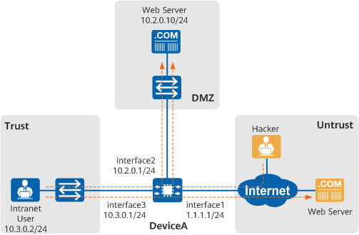

Example for Configuring Signature-based IPS
Networking Requirements
In Figure 1, DeviceA is deployed at the border of an enterprise network as a security gateway. In the networking:
- Intranet users can access the web server on the Internet.
- The web server on the intranet provides services for both intranet users and Internet users.
Figure 1 IPS networking diagram
In this example, interface1, interface2, and interface3 represent 10GE0/0/1, 10GE0/0/2, and 10GE0/0/3, respectively.

The enterprise needs to enable IPS on DeviceA to meet the following requirements:
Protecting intranet users
Protect intranet users from attacks, such as an attack launched from a website with malicious code, when they access the web server on the Internet.
Protecting the web server on the intranet
Prevent Internet and intranet users from attacking the web server on the intranet.
Configuration Roadmap
- Configure IP addresses for interfaces, enabling network connectivity.
- Create security policy policy_sec_1 and reference the default IPS profile default to protect intranet users against Internet attacks.
- Create security policy policy_sec_2 and reference the default IPS profile web_server to protect the web server on the intranet against attacks from intranet users and the Internet.
Procedure
- Configure IP addresses for interfaces and add them to security zones, enabling network connectivity.
<HUAWEI> system-view [HUAWEI] sysname DeviceA [DeviceA] interface 10ge 0/0/1 [DeviceA-10GE0/0/1] ip address 1.1.1.1 255.255.255.0 [DeviceA-10GE0/0/1] quit [DeviceA] interface 10ge 0/0/2 [DeviceA-10GE0/0/2] ip address 10.2.0.1 255.255.255.0 [DeviceA-10GE0/0/2] quit [DeviceA] interface 10ge 0/0/3 [DeviceA-10GE0/0/3] ip address 10.3.0.1 255.255.255.0 [DeviceA-10GE0/0/3] quit
- Configure a security policy for traffic between the Trust zone and the Untrust zone, and reference the IPS profile default.
[DeviceA] security-policy [DeviceA-policy-security] rule name policy_sec_1 [DeviceA-policy-security-rule-policy_sec_1] source-zone trust [DeviceA-policy-security-rule-policy_sec_1] destination-zone untrust [DeviceA-policy-security-rule-policy_sec_1] source-address 10.3.0.0 24 [DeviceA-policy-security-rule-policy_sec_1] profile ips default [DeviceA-policy-security-rule-policy_sec_1] action permit [DeviceA-policy-security-rule-policy_sec_1] quit
- Configure a security policy for traffic from the Trust zone to the DMZ and from the Untrust zone to the DMZ and reference the IPS profile web_server.
[DeviceA-policy-security] rule name policy_sec_2 [DeviceA-policy-security-rule-policy_sec_2] source-zone trust untrust [DeviceA-policy-security-rule-policy_sec_2] destination-zone dmz [DeviceA-policy-security-rule-policy_sec_2] destination-address 10.2.0.0 24 [DeviceA-policy-security-rule-policy_sec_2] profile ips web_server [DeviceA-policy-security-rule-policy_sec_2] action permit [DeviceA-policy-security-rule-policy_sec_2] quit [DeviceA-policy-security] quit
- Save the configuration so that the device can automatically load the configuration upon the next startup.
[DeviceA] quit <DeviceA> save
Verifying the Configuration
- When an attack event occurs and the access is blocked, you can view the threat log of the IPS module on the device.
You can run the display ips statistics command to view IPS statistics.
Configuration Scripts
# sysname DeviceA # interface 10GE0/0/1 ip address 1.1.1.1 255.255.255.0 # interface 10GE0/0/2 ip address 10.2.0.1 255.255.255.0 # interface 10GE0/0/3 ip address 10.3.0.1 255.255.255.0 # security-policy rule name policy_sec_1 source-zone trust destination-zone untrust source-address 10.3.0.0 24 profile ips default action permit rule name policy_sec_2 source-zone trust source-zone untrust destination-zone dmz destination-address 10.2.0.0 24 profile ips web_server action permit